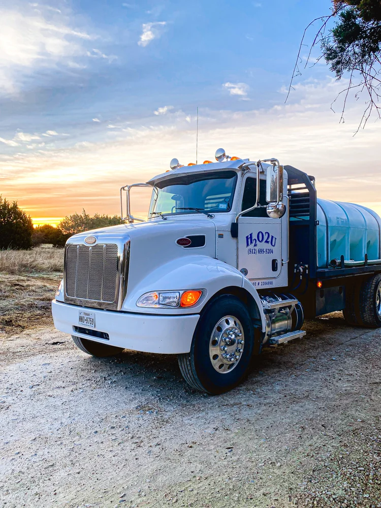

A local water delivery company built to help households, ranches and businesses get through drought and everything in between.
H2O2U is based in Dripping Springs, which gives us the unique ability to easily provide water of superior quality to neighboring communities. For more than 20 years, we've been an independent, family-owned volume water delivery company built to accommodate the needs of rural Central Texas.
We not only specialize in solving the problems of households and businesses affected by drought, we provide many other valuable water-related services as well. When you call, you reach people who live and work in the same Hill Country you do.
H2O2U offers dependable, friendly service with competitive prices, and we'll gladly arrange a site visit to consult with you about your water needs.

Our delivery equipment is manufactured specifically for potable water hauling, and it is cleaned regularly to ensure the utmost in sanitation and exceptional water quality.
Licensed by the Texas Commission on Environmental Quality (TCEQ) and accredited by the FDA and the National Sanitation Foundation (NSF).
Our water is supplied by the Lower Colorado River Authority (LCRA) and rigorously tested for purity by the Texas Department of State Health Services and the City of Austin.
Our 4,000-gallon trucks are built and maintained for potable water hauling, and we carry general liability insurance. Longer distances can be accommodated with prior notice.
Give us a call today and we'll gladly answer any questions you may have about our bulk water delivery service.